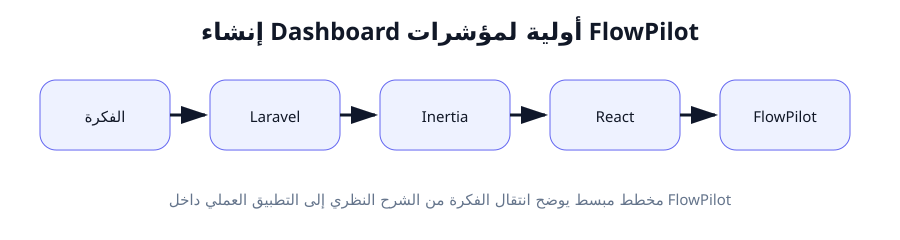
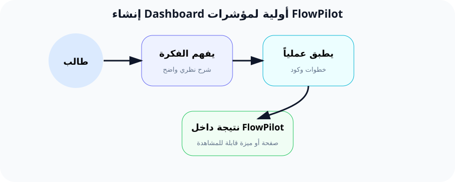

تصميم لوحة التحكم (Dashboard): عرض أولى مؤشرات FlowPilot
"لوحة التحكم هي المرآة التي يرى فيها المستخدم صحة مشاريعه في لمحة واحدة."
🔍 لماذا هذا الدرس مهم؟
هذا هو الدرس الختامي للأسبوع الثاني، وفيه نجمع كل ما تعلمناه في تطبيق واحد متكامل: Routes, Controllers, Layout, Components.
الـ Dashboard (لوحة التحكم) هي أول صفحة يراها المستخدم بعد تسجيل الدخول. هي "الواجهة الأمامية" لتطبيقك. إذا كانت جميلة ومنظمة، سيثق المستخدم بتطبيقك.
في FlowPilot، Dashboard ستعرض ملخصاً لمشاريع المستخدم: كم مشروعاً نشطاً، كم مهمة مكتملة، أعضاء الفريق، وآخر النشاطات. كل هذا في صفحة واحدة سهلة القراءة.
بعد هذا الدرس، سيكون لديك أول صفحة حقيقية في تطبيق FlowPilot!
📚 الشرح النظري المفصل
ما هي الـ Dashboard؟
هي صفحة تجمع مؤشرات الأداء الرئيسية (KPIs) في مكان واحد. بدلاً من أن يتنقل المستخدم بين 5 صفحات ليعرف وضع مشاريعه، يرى كل شيء في نظرة سريعة.
مكونات Dashboard النموذجية:
- بطاقات الإحصائيات (Stat Cards): أرقام سريعة (عدد المشاريع، المهام، إلخ).
- قائمة سريعة (Recent Items): آخر المشاريع أو المهام.
- ترحيب شخصي: "أهلاً بك يا [اسم المستخدم]" يضيف لمسة شخصية.
- إشعارات أو تنبيهات: إذا كان هناك شيء يحتاج انتباه المستخدم.
جلب البيانات من Controller إلى Dashboard
في Controller، نجمع البيانات التي نحتاجها لعرضها في Dashboard. سنستخدم بيانات وهمية الآن، ولكن الأسبوع القادم سنستخدم قاعدة البيانات الحقيقية.
مشاركة البيانات عبر Inertia (Shared Data)
Inertia يتيح لنا مشاركة بيانات مع كل الصفحات دون الحاجة لتمريرها يدوياً في كل Controller. مثلاً: اسم المستخدم المسجل حالياً.
نستخدم ملف HandleInertiaRequests.php في Laravel لمشاركة البيانات:
في React، نستخدم usePage() للوصول لهذه البيانات المشتركة:
تصميم Dashboard المتجاوب (Responsive)
لوحة التحكم يجب أن تعمل على كل الشاشات: الموبايل، التابلت، وسطح المكتب.
نظام Grid في Tailwind يجعل هذا سهلاً:
grid-cols-1 = عمود واحد للموبايل. md:grid-cols-2 = عمودان للتابلت. lg:grid-cols-3 = 3 أعمدة لسطح المكتب.
إضافة لمسة شخصية: اسم المستخدم
استخدام اسم المستخدم في Dashboard يجعل التجربة أكثر دفئاً. في FlowPilot، سنعرض:
auth?.user?.name - علامة ?. (Optional Chaining) تعني: إذا كان auth موجوداً، وإذا كان user موجوداً، أعطني name. هذا يمنع الخطأ إذا لم يكن المستخدم مسجلاً.
🌍 مثال من الحياة اليومية
تشبيه "عدادات السيارة"
تخيل أنك تقود سيارة. هل تحتاج أن تفتح غطاء المحرك لتعرف سرعتك أو كمية الوقود؟ بالطبع لا!
- لوحة العدادات (Dashboard) أمامك تعرض لك كل ما تحتاج: السرعة، الوقود، الحرارة، عدد اللفات.
- عداد السرعة = عدد المشاريع النشطة (StatCard).
- مؤشر الوقود = نسبة إنجاز المهام (ProgressBar).
- لمبة التحذير = المهام المتأخرة (Alert/Notification).
تماماً كما لا يحتاج السائق لفحص المحرك يدوياً، لا يحتاج مدير المشروع لفتح كل صفحة ليعرف الوضع. Dashboard يلخص كل شيء.
🚀 كيف يخدم هذا الدرس مشروع FlowPilot؟
في هذا الدرس، نبني أول واجهة Dashboard حقيقية لـ FlowPilot:
تحية ترحيبية
"أهلاً بك يا [اسم المستخدم]"
4 بطاقات إحصائيات
المشاريع، المهام المكتملة، أعضاء الفريق، المهام المعلقة
آخر المشاريع
قائمة بآخر 3 مشاريع
آخر المهام
قائمة بأهم المهام المعلقة
⚡ التطبيق العملي خطوة بخطوة
الخطوة 1: إنشاء DashboardController
المكان: نافذة الطرفية
أنشئ Controller جديداً مخصصاً للوحة التحكم.
الخطوة 2: كتابة دالة index في DashboardController
المكان: app/Http/Controllers/DashboardController.php
الخطوة 3: تعريف مسار Dashboard
المكان: routes/web.php
الخطوة 4: إنشاء صفحة Dashboard.jsx كاملة
المكان: resources/js/Pages/Dashboard.jsx
الخطوة 5: إضافة البيانات المشتركة (Shared Data)
المكان: app/Http/Middleware/HandleInertiaRequests.php
هذا يجعل auth.user.name و appName متوفرة في كل صفحات React.
الخطوة 6: اختبار Dashboard
المكان: المتصفح
اذهب إلى http://localhost:8000/dashboard
يجب أن ترى: تحية ترحيبية، 4 بطاقات إحصائيات، و 3 بطاقات مشاريع.
📝 شرح الكود سطراً سطراً
تحليل Dashboard.jsx
السطر 1: import { usePage } from '@inertiajs/react'
usePage() هو Hook من Inertia يسمح لنا بالوصول إلى البيانات المشتركة التي أرسلناها من Laravel عبر HandleInertiaRequests.
السطر 5: function Dashboard({ stats, recentProjects })
هذان هما Props اللذان أرسلناهما من Controller عبر Inertia::render('Dashboard', ['stats' => $stats, 'recentProjects' => $recentProjects]).
السطر 6: const { auth } = usePage().props
نستخرج auth من البيانات المشتركة (وليس من Props الخاصة بهذه الصفحة). auth يحتوي على user الذي فيه name و email.
السطر 7: auth?.user?.name || 'مستخدم FlowPilot'
Optional Chaining (?.) يمنع الخطأ إذا كان auth أو user غير موجود. إذا كان أحدهما null، نستخدم النص الافتراضي 'مستخدم FlowPilot'.
تحليل نظام Grid المتجاوب
شرح نظام Grid
grid-cols-1: على الشاشات الصغيرة جداً (موبايل)، عمود واحد.
sm:grid-cols-2: على الشاشات الصغيرة (sm ≥ 640px)، عمودان.
lg:grid-cols-4: على الشاشات الكبيرة (lg ≥ 1024px)، 4 أعمدة.
gap-4: مسافة 16px بين البطاقات.
هذا يعني: في الموبايل، البطاقات تكون فوق بعض (عمود واحد). في سطح المكتب، 4 بطاقات جنباً إلى جنب.
✅ النتيجة المتوقعة
بعد تنفيذ جميع الخطوات، يجب أن ترى على /dashboard:
- عنوان ترحيبي: "أهلاً بك يا [اسم المستخدم] 👋"
- 4 بطاقات إحصائيات في صف (على سطح المكتب): المشاريع (12)، المهام المكتملة (45)، أعضاء الفريق (8)، المهام المعلقة (7).
- كل بطاقة لها أيقونة ولون مختلف (indigo, emerald, amber, rose).
- قسم "آخر المشاريع" يحتوي على 3 بطاقات مشاريع.
- التصميم متجاوب: على الموبايل، البطاقات تصفف عمودياً.
- الـ Layout (Navbar + Sidebar) يظهر حول المحتوى.
⚠️ الأخطاء الشائعة
🚫 الخطأ 1: Dashboard يظهر بدون Navbar/Sidebar
السبب: نسيت إضافة Dashboard.layout = page => <AppLayout children={page} />.
الحل: أضف السطر بعد إغلاق الدالة مباشرة.
🚫 الخطأ 2: "Cannot read properties of undefined (reading 'totalProjects')"
السبب: Props لم تصل من Controller لأن اسم المفتاح في Inertia::render() مختلف عن اسمه في الدالة.
الحل: تأكد من أن 'stats' => $stats في Controller يطابق { stats } في React.
🚫 الخطأ 3: اسم المستخدم يظهر "مستخدم FlowPilot" بدلاً من الاسم الحقيقي
السبب: Shared Data في HandleInertiaRequests.php لم تُضبط بشكل صحيح، أو المستخدم غير مسجل دخول.
الحل: تأكد من تفعيل نظام المصادقة (Laravel Breeze/Jetstream) وأنك سجلت دخولك. تحقق من ملف HandleInertiaRequests.php.
🚫 الخطأ 4: بطاقات الإحصائيات تظهر فوق بعضها في جميع الشاشات
السبب: نسيت كلاسات Tailwind للـ Grid المتجاوب.
الحل: استخدم grid grid-cols-1 sm:grid-cols-2 lg:grid-cols-4 gap-4 بدلاً من كلاس واحد فقط.
🚫 الخطأ 5: الصفحة تظهر بيضاء مع خطأ في Console: "ReferenceError: route is not defined"
السبب: دالة route() تحتاج إلى أن تكون مستوردة أو متوفرة من Inertia.
الحل: إذا كنت تستخدم route() في Sidebar/Navbar، تأكد من أن تثبيت Inertia React تم بشكل صحيح.
📊 مخططات توضيحية

هيكل Dashboard وتدفق البيانات

تشبيه عداد السيارة للـ Dashboard
📋 ملخص الدرس
المفاهيم الرئيسية
- 🔹 Dashboard: صفحة تلخص مؤشرات الأداء في مكان واحد.
- 🔹 Stat Cards: بطاقات إحصائية تعرض أرقاماً سريعة.
- 🔹 Shared Data: بيانات متوفرة في كل الصفحات عبر Inertia.
- 🔹 Grid متجاوب: ترتيب البطاقات يتكيف مع حجم الشاشة.
- 🔹 usePage(): Hook للوصول للبيانات المشتركة.
ما أنجزناه في الأسبوع 2
- 🔸 الدرس 1: فهم Routes وربطها بصفحات React.
- 🔸 الدرس 2: بناء Layout رئيسي (Navbar + Sidebar).
- 🔸 الدرس 3: إنشاء مكونات قابلة لإعادة الاستخدام.
- 🔸 الدرس 4: 🏆 بناء Dashboard كاملة!
أنت الآن تمتلك هيكل تطبيق ويب كامل. الأسبوع القادم: قواعد البيانات!